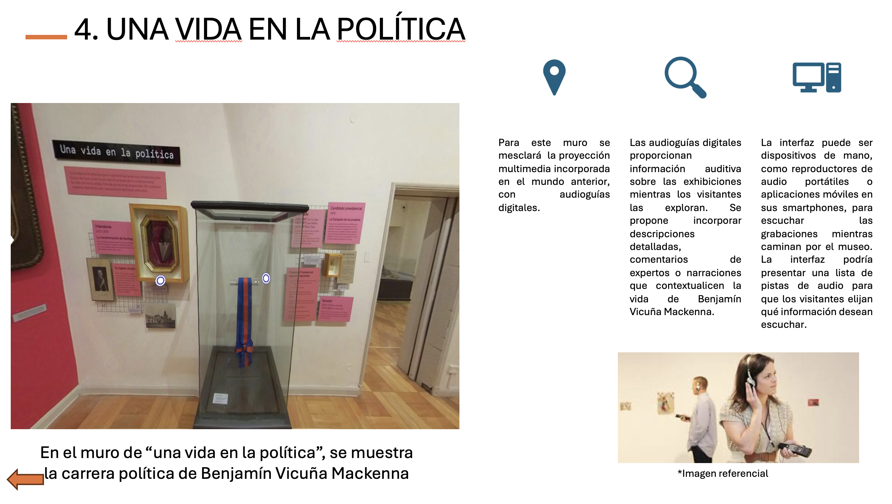
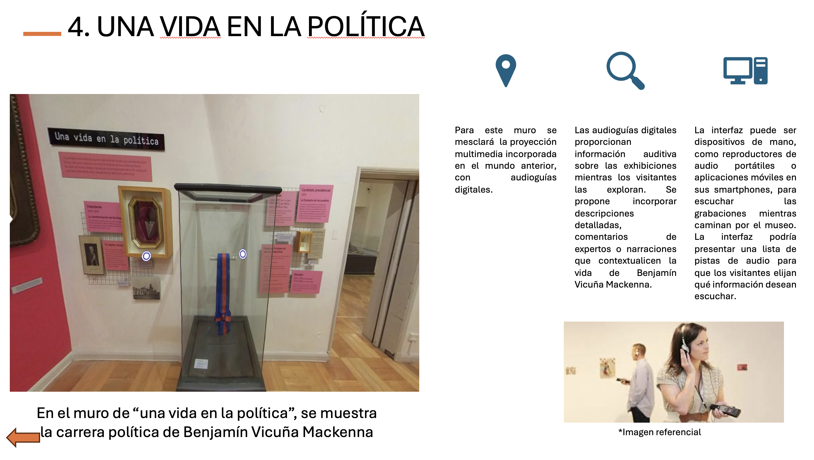

Hola, Bienvenido al Museo
Benjamin Vickuna Mackena
EL MuseoBenjamin Vicuna MackenaFue creado el año 1947 e inaugurado el 21 de noviembre de 1957. Este Museo fue fundado por el nieto del prócer, Eugenio Orrego Luco, con la finalidad de difundir el legado de quien en 1872 hasta 1875 fue Intendente de Santiago, esto se desarrolló mediante la creación de un espacio museográfico centrado en la vida de este hombre.

Conociendo...
Este recorrido pone en valor la vida y legado de Vicuña Mackenna (1831-1886), con especial énfasis en su legado urbano en Santiago. Se destacaron 22 elementos, entre ellos la torre de libros, maqueta del cerro Santa Lucía, el Plano de Ansart, entre otros..

Interactivo
Para comenzar a navegar selecciona el icono patrimonial que quieras recorrer. Luego, en su menú principal encontrarás un plano con círculos que al pincharlos te llevarán directamente al espacio que seleccionaste.
Enfoque y desarrollo Sala 1
La sala uno se dedica a la evolución política de Benjamín Vicuña Mackenna desde sus inicios como joven revolucionario hasta su última etapa como parlamentario.
El ciudadano
Ex alumno instito nacional, abogado de u de chile, Intendente de Santiag 25 de agosto de 1831.


 

Contacto
Av. Vicuña Mackenna 94, Providencia, Santiago..